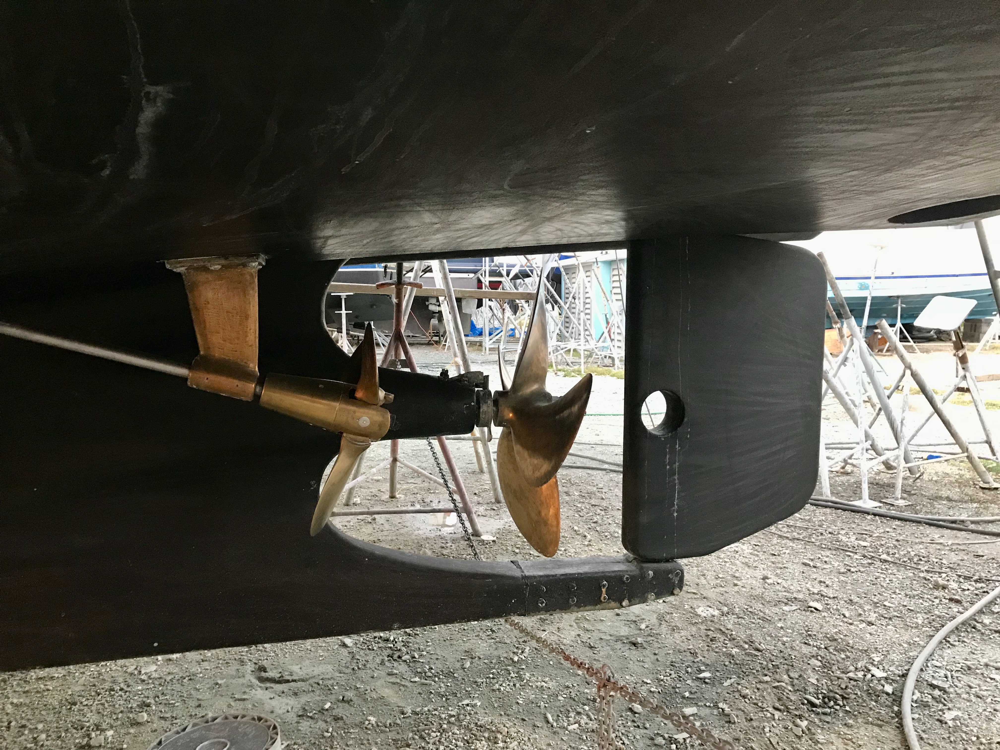
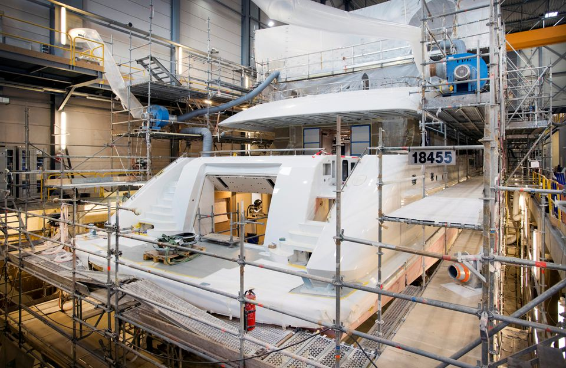

Blue Ocean Sales and Management LLC
Tony Gagliardo
Global Yacht Surveyor


An exceptional surveyor will take the time to use his experienced eyes to spot any potential issue early, saving you time, money, and frustration. Getting an accurate, in-depth assessment of the not-so-obvious is our job.
Involved in the design of pleasure and commercial boats from 30 to 250 feet. Worked in a small three-man design team and for the largest production boat manufacturer in the world.
Overseen vessels constructed in wood, aluminum, steel, and composites. Worked with others on the development of machine-produced mold tooling and closed molding techniques.
35 years of experience and 60,000 ocean miles operating in the Gulf, Atlantic, Caribbean and Mediterranean waters. Have lived full-time aboard our sailing yacht since 2017.
Not rooted in any local area. Work for you, my client, and keep your best interest in mind — leaving sellers, brokers, yards, and vendors to take care of their own interests.

Comprehensive pre-purchase, insurance, damage, and specialty surveys conducted to industry standards — wherever your vessel is located.
Learn More →
Refit supervision, new build oversight, and delivery management. We ensure your project is completed on time, on budget, and to specification.
Get in Touch →
Naval architecture support and custom technical design solutions, drawing on decades of hands-on experience across a wide range of vessel types.
Get in Touch →Call or message us for a consultation.


Society of Accredited Marine Surveyors® — SAMS Surveyor Associate | International Institute of Marine Surveyors® — IIMS AffilIIMS | American Boat and Yacht Council®